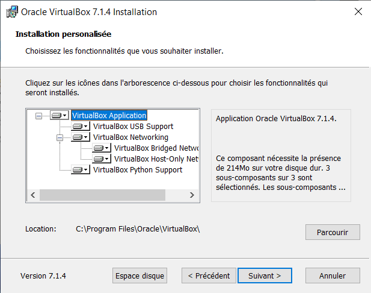

instaltion de Virtualbox ainsi que Ubuntu.
Résultat :



Explication :
Ici rien de complique on instale juste de facon classqiue Virtualbox et Ubuntu qui vas nous servir pour la suite
Le but de cette SAÉ (situation d’apprentissage et d’évaluation) est dans un premier temps de s’initier à la
technique de virtualisation en installant un environnement de virtualisation et en créant une machine virtuelle.
Dans un second temps, il s’agit d’installer un serveur web et de l’utiliser pour mettre en ligne le rapport de la SAE.
instaltion de Virtualbox ainsi que Ubuntu.
Résultat :
Explication :
Ici rien de complique on instale juste de facon classqiue Virtualbox et Ubuntu qui vas nous servir pour la suite
Instaltion de la MV.
Résultat :


Explication :
le telechargement de ubuntu vas nous servir puisque lors du telechargement de la machine virtuelle on rentre le fichier ISO de ubuntu puis on defini la memoire RAM que l'on veut allouer
Instalion linux .
Résultat :


Explication :
ici on configure linux avec la langue et on se cree un compte puis on realise les comamnde que l'on nous demander dans la Sae